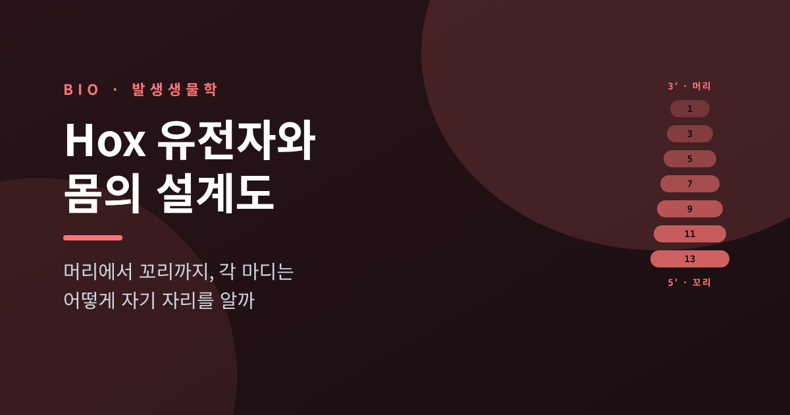
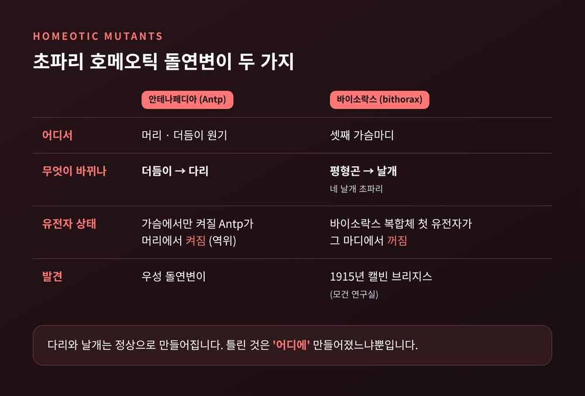
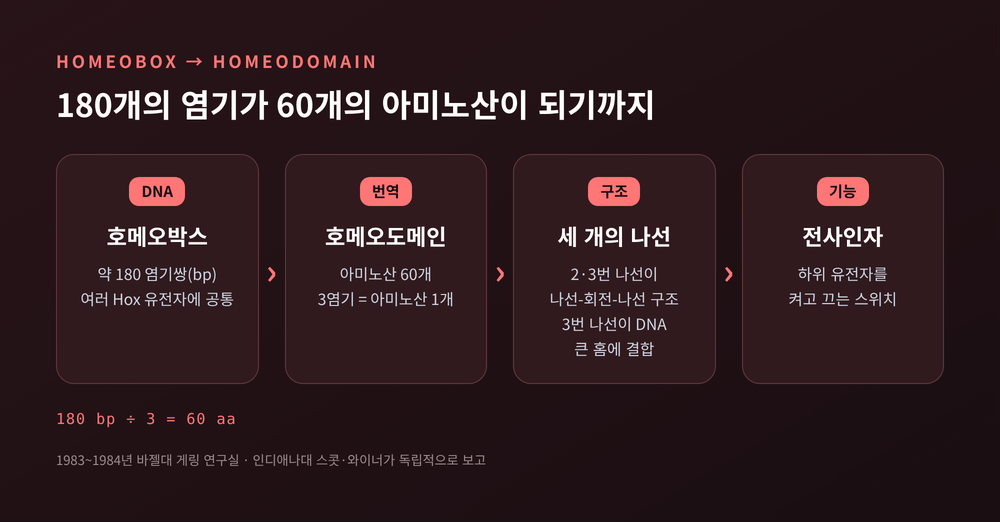
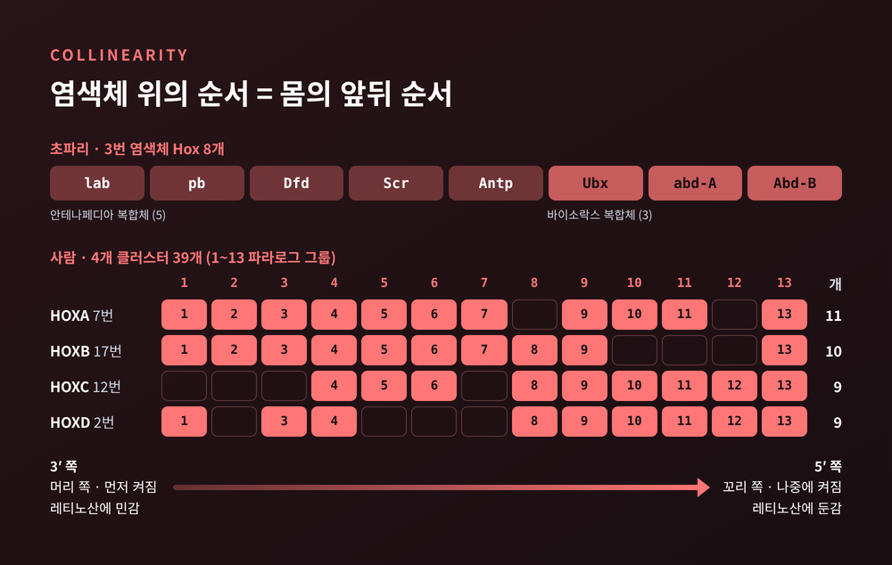
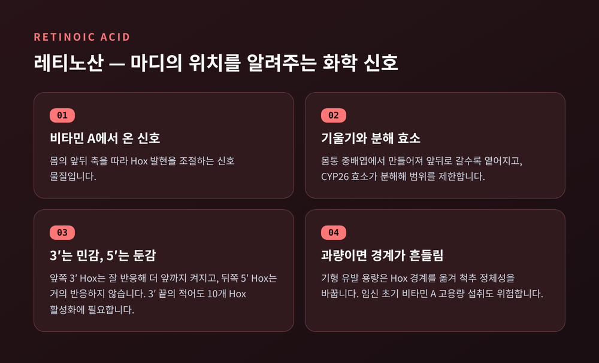
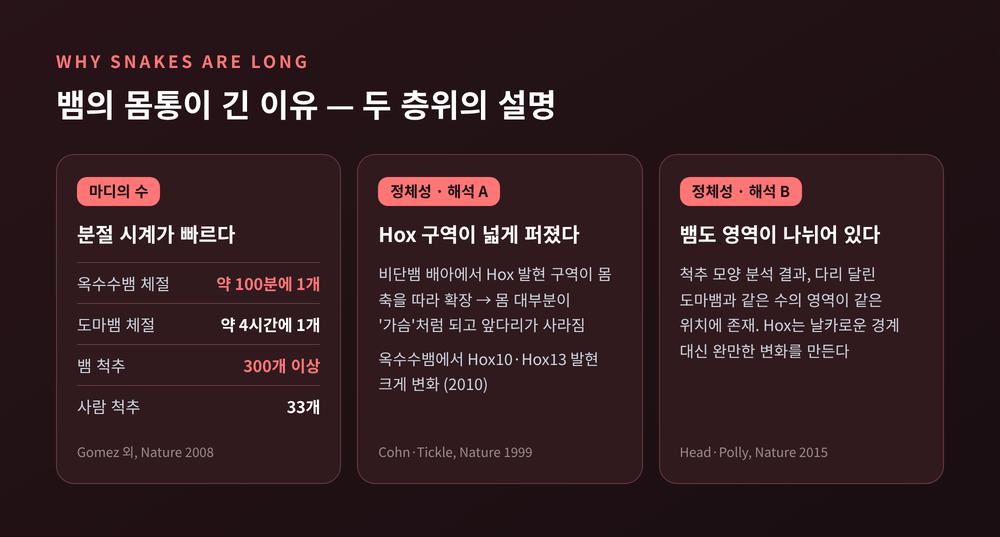
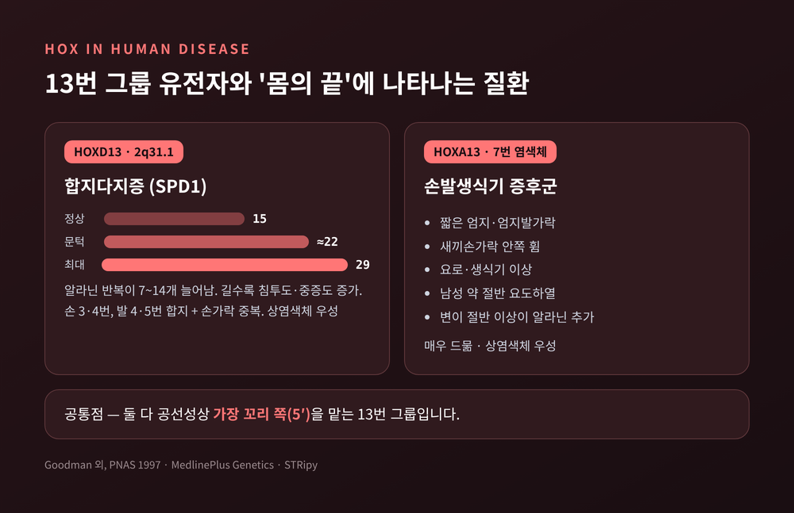

Hox 유전자와 몸의 설계도 — 각 마디는 어떻게 자기 자리를 알까

이번 글에서는 Hox 유전자를 정리해 보겠습니다. 머리에서 꼬리까지 이어진 몸의 마디마다 "나는 목이다, 나는 가슴이다"라는 정체성을 부여하는 유전자 묶음입니다. 초파리 돌연변이에서 시작해 노벨상, 염색체 위의 순서, 뱀의 긴 몸통, 사람의 손가락 질환까지 차례로 따라가 봅니다.
먼저 요점부터 짚어 두겠습니다.
- Hox 유전자는 몸을 만드는 유전자가 아니라, 이미 만들어진 마디에 '주소'를 붙이는 유전자입니다.
- 염색체 위에 놓인 순서가 몸의 앞뒤 순서와 그대로 대응합니다. 이것을 공선성이라고 부릅니다.
- 이 주소가 어긋나면 더듬이 자리에 다리가 나고, 사람에게서는 손가락이 붙거나 하나 더 생깁니다.
■ 머리에서 다리가 자라는 초파리
이야기는 이상한 초파리에서 시작합니다.
1915년, 토머스 헌트 모건 연구실의 캘빈 브리지스가 바이소락스(Bithorax) 돌연변이를 처음 발견했습니다. 몸의 한 부분이 다른 부분으로 바뀌는 이런 현상을 '호메오시스'라고 합니다. 1894년 윌리엄 베이트슨이 붙인 이름입니다.
대표적인 예가 두 가지 있습니다.
첫째, 안테나페디아(Antennapedia) 돌연변이입니다. 원래 가슴에서만 켜져야 할 Antp 유전자가 머리의 더듬이 원기에서 켜지면, 더듬이가 있어야 할 자리에 다리가 자랍니다. 이 우성 돌연변이는 염색체 일부가 뒤집히는 역위로 생깁니다.
둘째, 네 날개 초파리입니다. 초파리는 원래 날개가 한 쌍이고, 그 뒤 마디에는 '평형곤'이라는 작은 균형 기관이 붙어 있습니다. 바이소락스 복합체의 첫 유전자가 이 마디에서 작동하지 않으면 평형곤 대신 날개가 한 쌍 더 생깁니다.
여기서 눈여겨볼 점이 있습니다. 다리나 날개 자체는 멀쩡하게 만들어집니다. 틀린 것은 '어디에' 만들어졌느냐뿐입니다.

■ 1995년 노벨상이 주목한 것
이 기묘한 돌연변이를 수십 년 동안 붙잡은 사람이 칼텍의 에드워드 B. 루이스입니다. 그는 1940년대 초부터 호메오틱 변형의 유전적 원리를 파고들었습니다. 여분의 날개가 마디 하나가 통째로 중복된 결과라는 것도 밝혔습니다.
1978년에 그는 중요한 규칙 하나를 정리합니다. 바이소락스 복합체에서 앞쪽에 놓인 유전자는 몸의 앞쪽 마디를, 뒤쪽 유전자는 뒤쪽 마디를 맡는다는 것입니다. 이웃한 유전자들의 담당 구역은 서로 겹치고, 여러 유전자가 함께 한 마디의 정체성을 정합니다.
같은 시기, 유럽분자생물학연구소(EMBL) 하이델베르크에서 크리스티아네 뉘슬라인폴하르트와 에릭 비샤우스는 다른 방식으로 접근했습니다. 초파리 유전자의 약 절반에 무작위로 돌연변이를 일으킨 뒤, 1년 넘게 배아를 들여다봤습니다. 그 결과 마디 형성에 문제를 일으키는 유전자 15개를 찾아내 1980년 Nature에 발표했습니다. 갭 유전자, 페어룰 유전자, 마디 극성 유전자라는 세 부류입니다.
세 사람은 1995년 노벨 생리의학상을 함께 받았습니다. 수상 사유는 "초기 배아 발생의 유전적 조절에 관한 발견"이었습니다.
두 연구는 역할이 다릅니다. 뉘슬라인폴하르트와 비샤우스가 찾은 유전자들은 배아를 마디로 '자르는' 쪽입니다. 루이스가 연구한 호메오틱 유전자는 잘린 마디마다 '이름표를 다는' 쪽입니다.
■ 180개의 염기, 60개의 아미노산
1983~1984년, 두 연구실이 각자 독립적으로 놀라운 사실을 보고합니다. 스위스 바젤대학교의 월터 게링 연구실, 그리고 미국 인디애나대학교의 매슈 스콧과 에이미 와이너입니다. 서로 다른 호메오틱 유전자들 안에 거의 같은 DNA 구간이 들어 있었던 것입니다.
이 구간이 '호메오박스'입니다. 길이는 약 180 염기쌍입니다. 여기서 만들어지는 단백질 부분이 '호메오도메인'이고, 아미노산 60개로 이루어집니다. 세 염기가 아미노산 하나를 지정하니 180과 60은 자연스럽게 맞아떨어집니다.
호메오도메인은 세 개의 나선으로 접힙니다. 그중 두 번째와 세 번째 나선이 '나선-회전-나선' 구조를 이루고, 더 긴 세 번째 나선이 DNA의 큰 홈에 끼어 들어갑니다. 즉 Hox 단백질은 DNA에 달라붙어 다른 유전자들을 켜고 끄는 전사인자입니다.

이 서열은 동물계 전반에 놀랄 만큼 잘 보존되어 있습니다. 노벨위원회는 사람의 HOX 유전자가 초파리 것과 충분히 닮아서, 돌연변이 초파리 유전자의 기능 일부를 되살릴 수 있다고 설명했습니다. Hox 유전자의 기원은 5억 5천만 년보다 더 거슬러 올라가는 것으로 추정됩니다.
다만 한 가지는 구분해 둘 필요가 있습니다. 사람에게 호메오박스를 가진 유전자는 200개가 넘지만, 그중 Hox 유전자는 39개뿐입니다. Hox는 염색체 위에 줄지어 무리를 이루는 특별한 한 부류입니다.
■ 공선성 — 염색체 순서가 곧 몸의 순서
초파리의 Hox 유전자는 8개이고, 모두 3번 염색체에 있습니다. 앞쪽을 맡는 안테나페디아 복합체에 lab, pb, Dfd, Scr, Antp 다섯 개가, 뒤쪽을 맡는 바이소락스 복합체에 Ubx, abd-A, Abd-B 세 개가 놓여 있습니다.
포유류는 이 묶음을 네 벌 가지고 있습니다. 사람 기준으로 HOXA는 7번, HOXB는 17번, HOXC는 12번, HOXD는 2번 염색체에 있습니다. 각각 11개, 10개, 9개, 9개로 모두 39개입니다. 비슷한 위치의 유전자끼리는 1번부터 13번까지 '파라로그 그룹'으로 묶습니다.
왜 네 벌일까요. 척추동물의 조상에서 유전체 전체가 두 차례 복제되었기 때문으로 봅니다. 이론상 13개씩 네 벌, 52개였던 셈인데, 그중 일부를 잃고 지금의 39개가 남았습니다.
이제 핵심인 공선성입니다. 초파리든 생쥐든 사람이든, 유전자가 염색체에 놓인 순서와 몸의 앞뒤 축에서 일하는 순서가 같습니다. 클러스터 한쪽 끝(3′ 쪽)의 1번 유전자는 머리 가까이에서, 반대쪽 끝(5′ 쪽)의 13번 유전자는 꼬리 끝에서 켜집니다.

공선성에는 시간의 차원도 있습니다. 척추동물 배아에서 Hox 유전자는 3′에서 5′ 방향으로 시간 순서대로 켜집니다. 연구자들은 이를 'Hox 시계'라고 부릅니다. 배아는 꼬리 쪽 성장대에서 몸통과 꼬리를 차례로 만들어 가는데, 이 시계가 그 성장과 박자를 맞춥니다.
클러스터가 열릴 때는 유전자를 잠가 두던 억제 표지(H3K27me3)가 한쪽 방향으로 차례차례 풀립니다. 그리고 가장 마지막에 켜지는 13번 그룹 유전자가 몸 축이 더 길어지지 않도록 브레이크를 겁니다. 다만 염색질이 순서대로 열리는 정확한 기전은 아직 완전히 풀리지 않았습니다.
■ 레티노산 — 위치를 알려주는 화학 신호
유전자 순서만으로 주소가 정해지지는 않습니다. 세포가 자기 위치를 가늠할 단서가 필요한데, 그중 하나가 레티노산입니다. 비타민 A에서 만들어지는 신호 물질입니다.
초기 배아에서 레티노산은 몸통 중배엽에서 만들어져 앞쪽과 뒤쪽으로 갈수록 옅어지는 기울기를 이룹니다. CYP26이라는 효소가 레티노산을 분해해 신호가 번지는 범위를 막아 줍니다.
Hox 유전자마다 이 신호에 대한 민감도가 다릅니다. 3′ 쪽, 즉 앞쪽을 맡는 유전자는 레티노산에 잘 반응해 더 앞쪽까지 켜집니다. 5′ 쪽 유전자는 거의 반응하지 않고 뒤쪽에 머뭅니다. 한 종설은 각 클러스터 3′ 끝의 적어도 10개 Hox 유전자를 켜는 데 레티노산이 필요하다고 정리합니다. Hoxa1, Hoxb3 같은 유전자 근처에는 레티노산 수용체가 붙는 반응 서열이 실제로 있습니다.

그래서 레티노산이 너무 많으면 문제가 생깁니다. 1991년 생쥐 실험에서는 기형을 일으킬 만한 용량의 레티노산이 원래 꺼져 있어야 할 부위의 Hox 유전자를 켰고, 척추의 정체성이 다른 부위의 것으로 바뀌었습니다. 변형의 방향은 노출 시기에 따라 다르게 보고됩니다.
사람도 예외가 아닙니다. 노벨위원회는 임신 초기에 비타민 A를 매우 많이 섭취하면 HOX 유전자 조절이 흐트러져 심한 기형이 생길 수 있다고 밝혔습니다. 1985년의 한 보고에서는 레티노산에 노출된 임신 59건 가운데 12건(20%)이 자연유산되었고, 21명(36%)에게서 주요 기형이 확인되었습니다.
■ 갈비뼈는 왜 가슴에만 있을까
Hox 유전자가 척추 하나하나에 정체성을 준다는 것은 생쥐 실험에서 선명하게 드러났습니다.
사람의 척추는 목 7개, 가슴 12개, 허리 5개, 엉치 5개, 꼬리 3~5개로 나뉩니다. 갈비뼈는 가슴 척추에만 붙습니다.
2003년 유타대학교의 웰릭과 카페키는 Hox10 그룹의 유전자 세 개를 모두 꺼 보았습니다. 그러자 갈비뼈가 가슴에서 멈추지 않고 허리를 지나 꼬리까지 이어졌습니다. Hox11 그룹 세 개를 모두 끄면 엉치뼈가 아예 생기지 않았습니다. 골반이 척추에 붙을 자리가 사라진 것입니다.
흥미로운 점은 셋 중 일부만 끄면 이런 극적인 변화가 나타나지 않았다는 것입니다. 같은 그룹의 유전자들이 서로의 빈자리를 메워 주기 때문입니다. 초파리에는 한 벌뿐이던 설계도가 포유류에서는 여러 벌의 예비본을 가진 셈입니다.
■ 뱀의 몸통이 긴 이유
뱀은 이 원리가 진화에서 어떻게 쓰였는지 보여주는 좋은 예입니다. 뱀은 300개가 넘는 척추를 가질 수 있습니다. 사람의 33개와 비교하면 열 배 가까운 수입니다.
여기에는 두 가지 층위의 설명이 있습니다.
하나는 '몇 개를 만드느냐'입니다. 2008년 연구에 따르면 옥수수뱀 배아는 약 100분마다 체절 하나를 만들고, 도마뱀은 약 4시간마다 하나를 만듭니다. 몸이 자라는 속도에 비해 마디를 찍어내는 시계가 훨씬 빨리 돌아서 마디 수가 크게 늘어납니다.
다른 하나는 '그 마디에 어떤 이름을 붙이느냐'입니다. 1999년 콘과 티클은 비단뱀 배아에서 Hox 유전자의 발현 구역이 몸 축을 따라 넓게 퍼져 있음을 보였습니다. 이것이 앞다리가 사라지고 몸 대부분이 '가슴'처럼 갈비뼈를 단 이유를 설명할 수 있다고 제안했습니다. 2010년 연구는 옥수수뱀에서 Hox10과 Hox13의 발현 양상이 크게 바뀌어 있었다고 보고했습니다. 생쥐에서 허리의 갈비뼈를 막던 Hox10이 뱀에서는 그 능력을 잃은 것으로 설명되기도 합니다.
그런데 이 그림에 반론도 있습니다. 2015년 헤드와 폴리는 뱀의 척추 모양을 정밀하게 분석해, 뱀 역시 다리 달린 도마뱀과 같은 수의 영역이 같은 위치에 있다고 보고했습니다. 척추 수가 많을 뿐 "똑같이 영역화되어 있다"는 것입니다. 이들은 뱀이 영역 구분을 잃은 것이 아니라, 오히려 포유류와 조류가 뚜렷한 경계를 따로 얻은 것이라고 해석합니다.

예전에는 '뱀은 몸 전체가 가슴이 되었다'는 설명이 주류였습니다. 지금은 Hox가 날카로운 경계 대신 완만한 변화를 만든다는 해석도 함께 놓여 있습니다. 어느 쪽이 맞는지는 아직 정리되는 중입니다.
■ 사람의 손가락에 남는 흔적
Hox 유전자의 이상은 사람에게서도 드러납니다. 가장 잘 알려진 예가 HOXD13과 관련된 합지다지증입니다. 손가락이 붙는 합지증과 손가락이 하나 더 생기는 다지증이 함께 나타나는 질환입니다.
HOXD13은 2번 염색체 HOXD 클러스터의 맨 끝, 5′ 쪽에 있습니다. 공선성으로 보면 가장 '꼬리 쪽'을 맡는 13번 그룹입니다.
이 유전자의 단백질에는 알라닌이 15개 연속으로 이어진 구간이 있습니다. 1997년 20개 가계를 분석한 연구에서, 환자들은 이 구간에 알라닌이 7~14개 더 붙어 있었습니다. 전형적으로 손은 셋째·넷째 손가락이, 발은 넷째·다섯째 발가락이 붙고, 붙은 사이에 손가락이 하나 더 생깁니다. 상염색체 우성으로 유전되지만, 변이가 있어도 증상이 나타나지 않는 사람도 있습니다.
눈에 띄는 것은 '길이와 중증도의 비례'입니다. 알라닌이 더 많이 늘어날수록 증상이 나타날 확률도, 정도도 커졌습니다. 증상이 없던 보인자 17명은 모두 가장 짧은 7개 확장을 갖고 있었습니다. 반면 14개가 늘어난 가계는 모두 심한 기형을 보였고, 남성 두 명에게서는 요도하열도 관찰되었습니다. 연구진은 알라닌이 대략 22개를 넘으면 문제가 생기는 문턱이 있다고 제안했습니다.
비슷한 예가 HOXA13입니다. 이 유전자의 변이는 손발생식기 증후군을 일으킵니다. 엄지와 엄지발가락이 짧고, 요로와 생식기에 이상이 생기며, 남성 환자의 약 절반에게서 요도하열이 나타납니다. 매우 드문 질환으로, 보고된 가계가 손에 꼽힙니다.

두 질환에는 공통점이 있습니다. 둘 다 13번 그룹, 곧 몸의 가장 '끝'을 맡는 유전자입니다. 그래서 손발가락 끝과 생식기처럼 몸의 말단에서 문제가 함께 나타나는 것으로 이해됩니다. 노벨위원회 역시 원인을 모르는 선천성 기형 가운데 일부가 이런 발생 유전자의 변이에서 비롯될 수 있다고 내다봤습니다.
■ 아직 남은 질문들
Hox 유전자가 모든 것을 설명하지는 않습니다. 뱀의 사례처럼 같은 현상을 두고 해석이 갈리기도 합니다. 공선성이 왜 그토록 오래 유지되는지, 염색질은 정확히 어떻게 순서대로 열리는지도 여전히 연구 대상입니다.
그래도 큰 그림은 분명합니다. 마디를 자르는 유전자가 있고, 그 마디에 이름을 붙이는 유전자가 있습니다. 이름표는 염색체 위의 순서와 레티노산 같은 화학 신호, 그리고 시간의 흐름이 함께 정합니다.
정리하면 이렇습니다. 초파리 머리의 다리, 네 날개, 생쥐의 꼬리 갈비뼈, 뱀의 수백 개 척추, 사람의 붙은 손가락은 모두 같은 질문으로 이어집니다. "이 마디는 몸의 어디인가."
5억 년이 넘도록 동물들이 같은 방식으로 이 질문에 답해 왔다는 점을 생각하면, 우리 손가락 다섯 개도 꽤 오래된 약속의 결과라고 말할 수 있겠습니다.
#Hox유전자 #호메오박스 #공선성 #발생생물학 #초파리돌연변이 #레티노산 #뱀진화 #합지증 #HOXD13 #노벨생리의학상